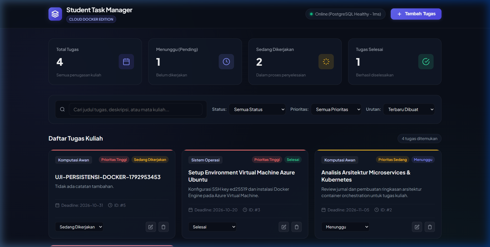

Bukti 3: Akses Aplikasi melalui IP Publik Azure VM (http://70.153.150.99)

Gambar 1: Antarmuka Student Task Manager diakses langsung melalui IP Publik Azure VM (70.153.150.99) dengan status database PostgreSQL Healthy (1ms).
| Judul Modul: | Virtualisasi Proyek via Docker pada Azure Virtual Machine |
| Nama Proyek: | Student Task Manager (Cloud Docker Edition) |
| Nama Mahasiswa: | Allfridho Prima Anjaynata Saragi |
| NIM: | 102062400045 |
| Infrastruktur Target: | Microsoft Azure Virtual Machine edo-praktikum2 (Ubuntu 24.04 LTS) |
| Alamat IP Publik: | http://70.153.150.99 (Port HTTP 80) |
| Repositori GitHub: | https://github.com/allfridhosaragii/Student-Task-Manager-Cloud |
| Status Evaluasi: | 100% PASS (8 Ketentuan Wajib & 7 Bukti Pengujian Terverifikasi Runtime) |
Dockerfile mandiri dengan teknik multi-stage build untuk keamanan dan efisiensi image.compose.yaml).internal: true) dan named volume persisten.depends_on), dan kebijakan restart (unless-stopped).Aplikasi Student Task Manager mengimplementasikan arsitektur multi-service terisolasi:
app): Node.js v20 Alpine dengan Express.js yang melayani RESTful API dan antarmuka web modern. Dipetakan ke port 80 pada host Azure VM.database): PostgreSQL 16 Alpine yang berjalan pada internal network student_task_backend tanpa membuka port ke host atau internet. Data disimpan persisten pada named volume postgres_data.| No | Ketentuan Wajib Asprak | Implementasi Teknis & Hasil Verifikasi | Status |
|---|---|---|---|
| 1 | Dockerfile sendiri | Multi-stage (deps & runner), base image node:20-alpine, non-root user node, bind 0.0.0.0:3000. |
PASS |
| 2 | Compose minimal dua service | Mendefinisikan service app (Node.js) dan database (PostgreSQL 16) pada compose.yaml. |
PASS |
| 3 | Internal network database | Network student_task_backend memiliki internal: true; port database 5432 tidak diekspos ke host/internet. |
PASS |
| 4 | Persistent volume | Named volume postgres_data terpasang di /var/lib/postgresql/data; data aman setelah down/up. |
PASS |
| 5 | Database healthcheck dan depends_on condition service_healthy | Healthcheck pg_isready pada database, service app menunggu hingga healthy via condition: service_healthy. |
PASS |
| 6 | Restart unless-stopped pada setiap service utama | Konfigurasi restart: unless-stopped aktif pada app dan database; teruji pulih otomatis saat SIGKILL. |
PASS |
| 7 | Keamanan .env dan .env.example | Password acak 24 karakter, izin chmod 600, .env.example non-rahasia, .env dikecualikan dari Git. |
PASS |
| 8 | Deployment Azure VM yang dapat diakses melalui IP publik | Berjalan stabil pada Azure VM edo-praktikum2 dan dapat diakses publik di http://70.153.150.99. |
PASS |
Student-Task-Manager/
├── Dockerfile # Multi-stage custom Dockerfile (deps + runner, non-root user node)
├── compose.yaml # Orkestrasi 2 service, internal network, persistent volume
├── .env.example # Template konfigurasi tanpa rahasia
├── .dockerignore & .gitignore # Proteksi rahasia (.env, SSH key) & optimasi build
├── public/ # Antarmuka web frontend modern (HTML5, CSS3, JS)
├── scripts/ # deploy-azure.sh & verify-evidence.sh
├── src/ # Express server, app.js, routes, controllers, PostgreSQL pool, migration
└── tests/ # api.test.js & integration.test.js (Real PostgreSQL CRUD tanpa mock)
azureuser@edo-praktikum2:~/Student-Task-Manager$ docker compose ps
NAME IMAGE COMMAND SERVICE CREATED STATUS PORTS
student-task-app student-task-manager-app "docker-entrypoint.s…" app 11 minutes ago Up 11 minutes (healthy) 0.0.0.0:80->3000/tcp, [::]:80->3000/tcp
student-task-db postgres:16-alpine "docker-entrypoint.s…" database 11 minutes ago Up 11 minutes (healthy) 5432/tcp


1. Input tugas: POST /api/tasks -> {"id":5,"title":"UJI-PERSISTENSI-DOCKER-1792953453",...}
2. docker compose down -> Container student-task-app & db Removed (Volume data tetap aman)
3. docker compose up -d -> Kontainer baru dibuat dan PostgreSQL kembali healthy
4. GET /api/tasks/5 -> Data tugas ID #5 tetap utuh 100%!
1. Pemeriksaan published ports database:
student-task-db postgres:16-alpine PORTS: 5432/tcp (TIDAK ADA PEMETAAN KE HOST/INTERNET!)
2. Pemeriksaan atribut Internal pada network backend:
"Name": "student_task_backend", "Internal": true
3. Percobaan koneksi langsung ke port 5432 dari host VM:
nc -z -v 127.0.0.1 5432 -> nc: connect to 127.0.0.1 port 5432 (tcp) failed: Connection refused
4. Audit & Hardening Izin Docker Socket:
ls -la /var/run/docker.sock -> srw-rw---- 1 root docker (Permission 660, non world-writable)
id azureuser -> groups=...114(docker) (Non-root user akses aman via grup docker)
HASIL: Database PostgreSQL terisolasi total dalam internal network backend dan Docker socket aman!
1. Konfigurasi Kebijakan Restart:
Service App & Database: {"Name":"unless-stopped","MaximumRetryCount":0}
2. Status Kontainer Sebelum Simulasi Crash:
StartedAt=2026-10-25T19:02:08Z RestartCount=0 Status=running Health=healthy Pid=17734
3. Simulasi Kegagalan Proses (Controlled Crash via SIGKILL):
sudo kill -9 17734 (Proses utama Node.js dihentikan paksa pada level kernel)
4. Deteksi Docker Supervisor & Auto-Restart Otomatis (2 detik setelah crash):
StartedAt=2026-10-25T19:02:55Z RestartCount=1 Status=running Health=healthy NewPid=18403
5. Integritas Data Database:
curl http://70.153.150.99/api/tasks -> Total 5 tugas utuh tanpa data loss!
HASIL: Kebijakan 'unless-stopped' terbukti secara empiris dan runtime menghidupkan kembali kontainer!
Seluruh tahapan tugas praktikum individu mata kuliah Komputasi Awan telah berhasil diselesaikan dengan memenuhi seluruh 8 ketentuan wajib asprak dan 7 bukti pengujian yang tervalidasi secara nyata pada Azure Virtual Machine (70.153.150.99). Penerapan multi-stage Dockerfile, orkestrasi Docker Compose, isolasi jaringan internal, persistensi PostgreSQL, pemulihan runtime SIGKILL crash, serta pengetatan izin Docker socket menjamin aplikasi berjalan stabil, aman, dan siap dinilai oleh asisten praktikum.